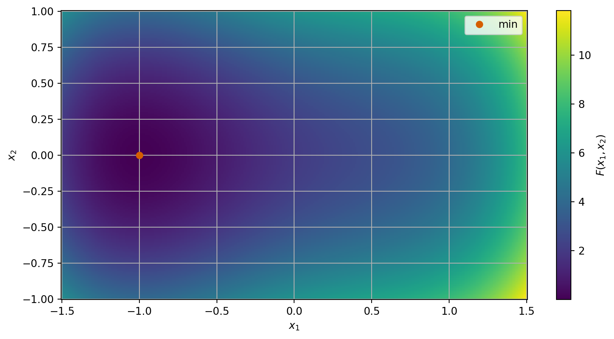
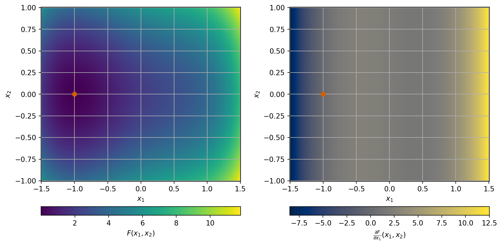
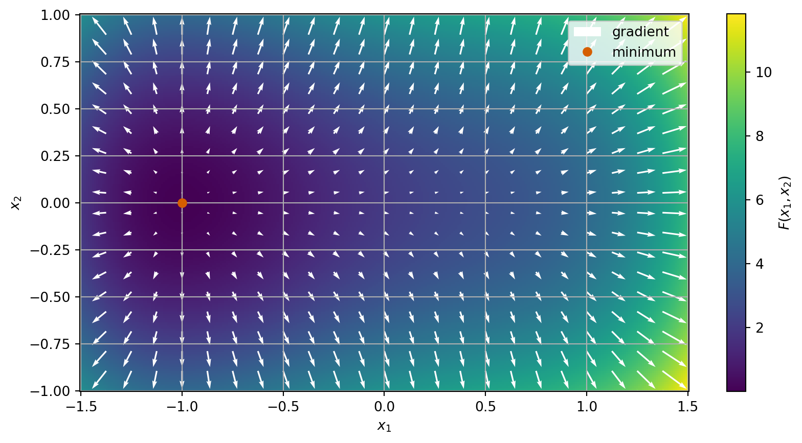

What about functions with higher dimension domains?
Module learning objective
When working with functions \(F \colon \mathbb{R}^n \to \mathbb{R}\) (\(n \ge 2\)), how do we compute derivatives?
Throughout this section we will work with the example function: \[ F(x_1, x_2) = x_1^4 - x_1^2 + 2 x_1 + 4 x_2^2 + 2. \]

Somehow we want to use the idea that if you move away from the minimum in any direction then the function increases.
A point \(\vec{x}^*\) is a local minimum if, for any direction \(\vec{v} \in \mathbb{R}^n\), the value \(h = 0\) is a local minimum of: \[ \gamma_{\vec{v}}(h) = F(\vec{x}^* + h \vec{v}) \ge F(\vec{x}^*) \quad\text{for all small}\quad h. \] We could try to use our ideas from one dimension then by considering the function \(\gamma_{\vec{v}} \colon \mathbb{R} \to \mathbb{R}\).
Example 1 Consider the function \[ F(x_1, x_2) = x_1^4 - x_1^2 + 2 x_1 + 4 x_2^2 + 2 \] and the directions \(\vec{v} = (1, 0)^T, (0, 1)^T\) and \((1, 1)^T\). Find \(\gamma_{\vec{v}}(h)\) and \(\gamma'_{\vec{v}}(h)\) at \(\vec{x}^* = (-1, 0)\).
The object we have been computing in this example is called the directional derivative:
Definition 1 Let \(F \colon \mathbb{R}^n \to \mathbb{R}\). We use the notation \(F'_{\vec{v}}\) for directional derivative of \(F\) at \(\vec{x}\) in a direction \(\vec{v}\) (with \(\vec{v} \neq \vec{0}\)) and this is given by: \[ F'_{\vec{v}}(\vec{x}) = \gamma'_{\vec{v}}(0) \frac{1}{\|\vec{v}\|}. \]
There is something else we can do, and the calculations for the direction \(\vec{v} = (1, 1)^T\) give us a clue! We saw that \[ \gamma'_{(1, 1)^T}(h) = \gamma'_{(1, 0)^T}(h) + \gamma'_{(0, 1)^T}(h). \] This is also true in general: For directions \(\vec{v}\) and \(\vec{w}\) and a number \(a\) \[\begin{align*} \gamma'_{\vec{v} + \vec{w}}(h) = \gamma'_{\vec{v}}(h) + \gamma'_{\vec{w}}(h) \\ \gamma'_{a \vec{v}}(h) = a \gamma'_{\vec{v}}(h). \end{align*}\]
Let \(\vec{e}^{(j)}\) be the vector with \(1\) in the \(j\)th place and \(0\) in every other place for \(j = 1, 2, \ldots n\).
Definition 2 Let \(F \colon \mathbb{R}^n \to \mathbb{R}\). Then the partial derivative of \(F\) at a point \(\vec{x}\) with respect to the \(j\)th variable \(x_j\) is defined as: \[ \frac{\partial F}{\partial x_j} (\vec{x}) = \lim_{h\to 0} \frac{F(\vec{x} + h \vec{e}^{(j)}) - F(\vec{x})}{h}. \]
Remark 1. The notation we use includes the curved \(\partial\) symbol which looks like a curvy “d” and is pronounced “partial”.
Example 2 Consider once more the function \[ F(x_1, x_2) = x_1^4 - x_1^2 + 2 x_1 + 4 x_2^2 + 2. \] We want to compute the partial derivative with respect to \(x_1\).

Exercise 1 Compute \(\frac{\partial F}{\partial x_2}\) for this example using either approach.
The ideas in these examples let us see that many of the properties of usual derivatives carry over to partial derivatives too:
Definition 3 Let \(F \colon \mathbb{R}^n \to \mathbb{R}\). Then the gradient of \(F\) is a function \(\nabla F : \mathbb{R}^n \to \mathbb{R}^n\) which is given by \[ \nabla F (\vec{x}) = \begin{pmatrix} \frac{\partial F}{\partial x_1}(\vec{x}) \\ \frac{\partial F}{\partial x_2}(\vec{x}) \\ \vdots \\ \frac{\partial F}{\partial x_n}(\vec{x}) \end{pmatrix}. \]
Example 3 With the same \(F\) as before, we can add white arrows to our previous plot to show the gradient of \(F\). At various points \(\vec{x}\) in the domain, we plot an arrow starting at \(\vec{x}\) in the direction \(\nabla F(\vec{x})\). The size of the arrow corresponds to the magnitude of the gradient.

We again see that the gradient follows some simple results: for functions \(F, G \colon \mathbb{R}^n \to \mathbb{R}\) and numbers \(a, b\) we have
One reason that the gradient is useful is the following lemma that connects the gradient to directional derivatives:
Lemma 1 Let \(F \colon \mathbb{R}^n \to \mathbb{R}\) be a smooth function. Then for any point \(\vec{x}\) and any direction \(\vec{v}\) we have \[ F'_{\vec{v}}(\vec{x}) = \nabla F(\vec{x}) \cdot \frac{\vec{v}}{\|\vec{v}\|}. \]
Lemma 2 Let \(F \colon \mathbb{R}^n \to \mathbb{R}\) be a smooth function. The gradient of \(F\) represents the direction in which \(F\) increase the most rapidly.
Remark 2. This result is very significant. It gives us an idea of how to manipulate a point towards a minimum - we can move in the direction opposite the gradient (i.e. \(-\nabla F(\vec{x})\)) and we will be following the steepest descent direction.
Definition 4 Let \(F \colon \mathbb{R}^n \to \mathbb{R}\) be a smooth function. Then the Hessian matrix of \(F\) is a square \(n \times n\) matrix of second partial derivatives defined and arranged as: \[ \nabla^2 F = \begin{pmatrix} \frac{\partial^2 F}{\partial x_1^2} & \frac{\partial^2 F}{\partial x_1 \partial x_2} & \cdots & \frac{\partial^2 F}{\partial x_1 \partial x_n} \\ \frac{\partial^2 F}{\partial x_2 \partial x_1} & \frac{\partial^2 F}{\partial x_2^2} & \cdots & \frac{\partial^2 F}{\partial x_2 \partial x_n} \\ \vdots & \vdots & \ddots & \vdots \\ \frac{\partial^2 F}{\partial x_n \partial x_1} & \frac{\partial^2 F}{\partial x_n \partial x_2} & \cdots & \frac{\partial^2 F}{\partial x_n^2}. \end{pmatrix} \]
Example 4 We want to compute the Hessian of \[ F(x_1, x_2) = x_1^4 - x_1^2 + 2 x_1 + 4 x_2^2 + 2. \] We already have the gradient: \[ \nabla F(x_1, x_2) = \begin{pmatrix} 4 x_1^3 - 2 x_1 + 2 \\ 8 x_2 \end{pmatrix}. \]
Exercise 2 Compute the Hessian of \[ F(x_1, x_2) = 2 x_1^2 + 2 x_2^2 - 2 x_1 x_2. \]
We notice that for both the example and exercise the Hessian is a symmetric matrix. This is true in general!
Lemma 3 For a smooth function \(F \colon \mathbb{R}^n \to \mathbb{R}\), we have \[ \frac{\partial^2 F}{\partial x_i \partial x_j} = \frac{\partial^2 F}{\partial x_j \partial x_i}, \] hence the Hessian is a symmetric matrix.
We use the notation \(B(\vec{x}, R)\) to denote the ball of radius \(R\) centered at \(\vec{x}\) which is given by \[ B(\vec{x}, r) = \{ \vec{y} \in \mathbb{R}^n : \| \vec{y} - \vec{x} \| < r \}. \] The idea of a ball generalises an interval to higher dimensions.
Definition 5 Let \(F \colon \mathbb{R}^n \to \mathbb{R}\). We say a point \(\vec{x}^*\) is a local minimum of \(F\) if for a small radius \(r > 0\), we have that \[ F(\vec{x}^*) \le F(\vec{x}) \quad\text{for all}\quad \vec{x} \in B(\vec{x}^*, r) \]
Lemma 4 Let \(F \colon \mathbb{R}^n \to \mathbb{R}\) be a smooth function. Let \(x^*\) be a local minimum of \(F\), then we have \[ F'_{\vec{v}}(x^*) = 0 \quad\text{for all non-zero directions}\quad \vec{v}. \] and \(\nabla F(x^*) = \vec{0}\).
Previously to map from local to global minima, we used the idea of convexity. We can do the same again here:
Definition 6 Let \(F \colon \mathbb{R}^n \to \mathbb{R}\) be a function. We say that \(F\) is locally convex on a ball \(B\) if for all \(\vec{x}, \vec{y} \in B\), we have \[ a F(\vec{x}) + (1-a) F(\vec{y}) \ge F(a\vec{x} + (1-a)\vec{y}) \quad\text{for all}\quad a \in [0,1]. \] We say that \(F\) is convex if it is convex on \(\mathbb{R}^n\) (i.e. convex for any ball \(B \subset \mathbb{R}^n\)).
Lemma 5 Let \(F \colon \mathbb{R}^n \to \mathbb{R}\) be a smooth function. Then the following are equivalent:
Example 5 The function given by \[ F(x_1, x_2) = x_1^4 - x_1^2 + 2 x_1 + 4 x_2^2 + 2 \] is not convex.
Exercise 3 Is \(F\) given by \[ F(x_1, x_2) = 2 x_1^2 + 2 x_2^2 - 2 x_1 x_2 \] convex? First, find the Hessian of \(F\) and then the eigenvalues of \(\nabla^2 F(\vec{x})\). What do they show you?
Example 6 Consider \(F \colon \mathbb{R}^2 \to \mathbb{R}\) given by \[ F(x_1, x_2) = (2 x_1 - 3)^2 + (3 x_2 + 4)^2. \]
Lemma 6 Let \(F \colon \mathbb{R}^n \to \mathbb{R}\) be a smooth function given by \(F = W \circ \vec{V}\) where \(\vec{V} \colon \mathbb{R}^n \to \mathbb{R}^m\) and \(W \colon \mathbb{R}^m \to \mathbb{R}\) are both smooth. Then \[ \frac{\partial F}{\partial x_j}(\vec{x}) = \sum_{i=1}^m \frac{\partial W}{\partial y_i}(\vec{V}(\vec{x}))\frac{\partial V_i}{\partial x_j}(\vec{x}). \]
We have previously seen that the terms \(\frac{\partial W}{\partial y_i}\) form part of the gradient of \(W\). There is a similar object called the Jacobian for vector-valued functions. Since \(\vec{V}\) has \(m\) output variables and \(n\) input variables, we store its partial derivative in a matrix with \(m\) rows and \(n\) columns:
Definition 7 Let \(\vec{V} \colon \mathbb{R}^n \to \mathbb{R}^m\). Then the Jacobian of \(\vec{V}\) at \(\vec{x}\) is the \(m \times n\) matrix given by: \[ J_{\vec{V}} = \begin{pmatrix} \frac{\partial \vec{V}}{\partial x_1} \cdots \frac{\partial \vec{V}}{\partial x_n} \end{pmatrix} = \begin{pmatrix} (\nabla V_1)^T \\ \vdots \\ (\nabla V_m)^T \end{pmatrix} = \begin{pmatrix} \frac{\partial V_1}{\partial x_1} & \cdots & \frac{\partial V_1}{\partial x_n} \\ \vdots & \ddots & \vdots \\ \frac{\partial V_m}{\partial x_1} & \cdots & \frac{\partial V_m}{\partial x_n} \end{pmatrix}. \] That is the Jacobian is the matrix:
With this notation the chain rule (Lemma 6) can be written as the matrix vector product \[ \nabla F(\vec{x}) = \big(J_{\vec{V}}(\vec{x})\big)^T \nabla W(\vec{V}(\vec{x})). \]
We have introduced derivatives for functions \(F \colon \mathbb{R}^n \to \mathbb{R}\):
We have also introduced the Jacobian of a function \(\vec{V} \colon \mathbb{R}^n \to \mathbb{R}^m\) and used this to form a chain rule.